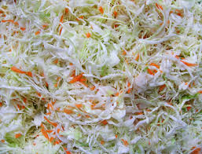

Cabbage Salad Recipe

Description
Cabbage salad is a simple and delicious salad that can be enjoyed as a
side dish or a main course. It is a great source of fiber and vitamins,
and it is also very low in calories. This recipe is a simple and easy way
to make cabbage salad, and it can be customized to your liking by adding
different vegetables, spices, or meats.
Ingredients
- 1 small head of green cabbage, thinly sliced
- 1/2 cup mayonnaise
- 1/4 cup apple cider vinegar
- 2 tablespoons Dijon mustard
- 1 tablespoon sugar
- 1/2 teaspoon salt
- 1/4 teaspoon black pepper
Steps
- In a large bowl, combine all of the ingredients and toss to coat.
- Refrigerate for at least 30 minutes before serving.
- Enjoy!
Tips
- For a more flavorful salad, use homemade mayonnaise.
-
Add other vegetables to the salad, such as shredded carrots, chopped
celery, or diced onions.
- Garnish the salad with fresh parsley or cilantro.
- Serve the salad with your favorite grilled or baked meat or fish.
This recipe is a great way to use up leftover cabbage. It is also a
healthy and refreshing side dish that is perfect for any occasion. Enjoy!